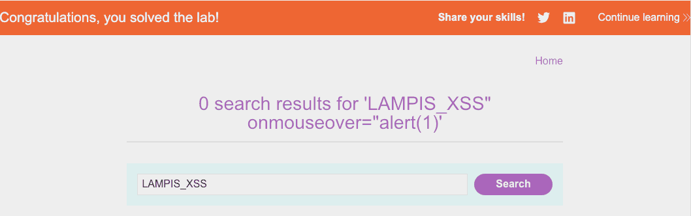
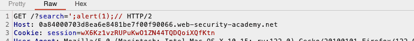

WSA Rest of apprentice XSS labs
Table of Contents
Introduction
Here we are, yet again. Little less than one hour (ideally) before turning this computer off, starting to work on WSA labs (hoping to tick some more off today).1
Lab 1: Reflected XSS into attribute with angle brackets HTML-encoded
You can check the lab out: here
Quickly we can see that the search field is where we should focus our
attention. Checking the source code after some attempts, it becomes
apparent that we can modify our input so that it adds a parameter and
onmouseover just does the job

Figure 1: Solving it
Lab 2: Stored XSS into anchor href attribute with double quotes HTML-encoded
You can check the lab out: here
This one is fairly easy. Heading to the comment section we can see that there are some input fields that are available to us. The only thing that needs attention here is to use all available parameters. This one took some more time than I would like to admit, because of my tendency to supply as little info as possible: I had not entered nothing in the website field, which is critical for this lab.
Plain old JavaScript links do the job:
javascript:alert(1)
Figure 2: Now, old comment section
Lab 3: Reflected XSS into a JavaScript string with angle brackets HTML encoded
You can check the lab out: here
Checking out the website’s source code we see that there exists this snippet, which is of interest since it handles our input:
var searchTerms = '" test'; document.write('<img src="/resources/images/tracker.gif?searchTerms='+encodeURIComponent(searchTerms)+'">');
I’m seeking of a payload in the following form:2
' onerror="alert(1)" '
The thing, is though, that:
- This invalidates the
varassignment - The usage of
encodeURIComponent, really messes up our input.
There I was, thinking of a possible solution to overcome those two
problems when it finally got to me: the first one is no problem.
Instead, I can just add as many commands as I want there, separated by
;. The only thing I need to pay attention to is to comment out the
last part of the line to avoid the remaining ' causing any problems.

Figure 3: Solution
Summary
Last week when I wrote my first wsa walkthrough I set a goal of completing 210 labs in this semester. I am afraid that it might be a little too much for someone with a schedule like mine, but I think it is viable. Sticking to it.
Stating this here, I aim to complete at least 210 labs (roughly 80% of the ones available in the website) by the end of May.